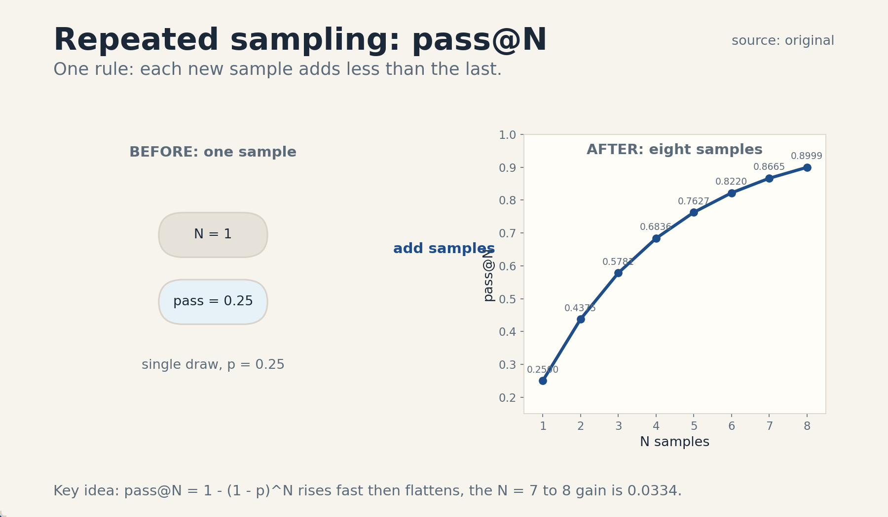
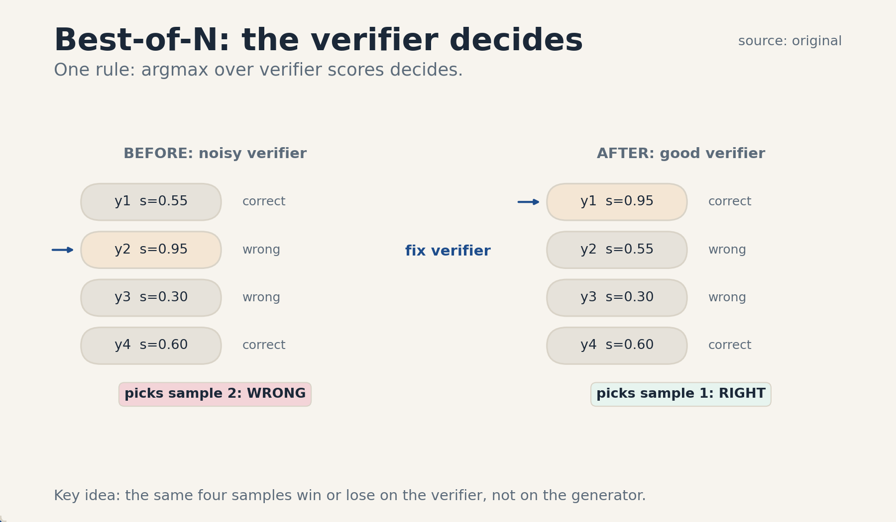
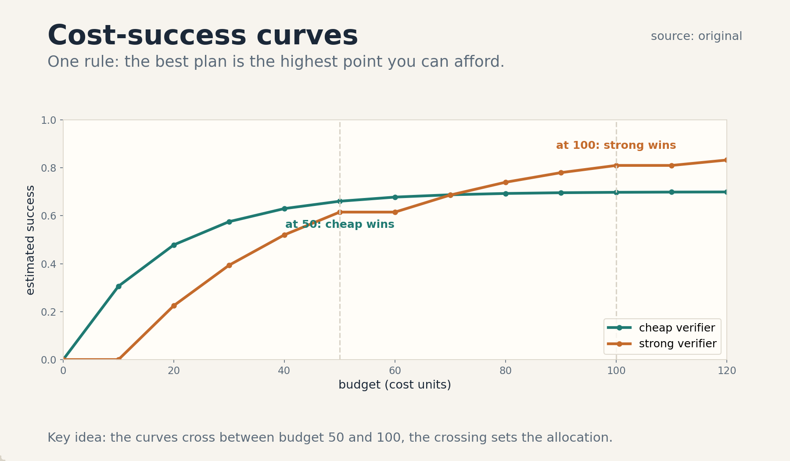

U01 · Test-time compute and verification
U01 , Test-time compute and verification
Course: Stanford CS329A, Autumn 2025. Official sessions 2 (Sep 26) and 3 (Sep 29). Baseline: 2026-10-07.
Claim class: mechanisms are taught from the requested inventory with SOURCE
ATTRIBUTION PENDING. Paper titles come from the verified official schedule
(see ../source_manifest.md). No paper contents were individually inspected
by this builder. Toy numbers are computed and traceable. Nothing here is a
benchmark claim.
Unit objectives
After this unit the learner can: define pass@N and derive it, run and score best-of-N and self-consistency on a toy, explain the generator/verifier gap. train and calibrate a toy verifier, name selection bias failure modes, and read a cost-success curve to pick a compute allocation under a budget.
Dependencies
P07 (statistical estimation), P14 (transformer decoding), P22 (experiments).
Local remediation is inside C01, C10, and C12. The shared bridges live at
../shared/prerequisites/.
Four-way link used in this unit
Intuition: more tries help when tries differ. Equation: pass@N = 1 - (1 - p)^N. Code: a seeded loop that draws N completions and keeps the best by verifier score. Observation: the measured curve rises fast then flattens, and a biased verifier bends it down.
C01 repeated sampling
1. Source mapping, scope, objectives, dependencies. Session 2, Test-time Compute Scaling. Reading pointer: Brown et al. 2024, Large Language Monkeys (SOURCE ATTRIBUTION PENDING). Scope: independent repeated sampling at inference time, no weight change. Objective: derive and compute pass@N. Dependencies: P07 (Bernoulli trials), P14 (a sample is one decoded completion under a fixed decoding policy), P22 (seeds).
2. Motivating question and tiny toy. Question: one model, one hard question. Do you ask once, or ask five times and keep the best? Toy: each sample is correct with probability p = 0.25, independent across samples. N = 5.
3. Plain-language mental model. Each sample is a lottery ticket. The prize goes to the set, not the ticket: the set wins if any ticket wins. More tickets raise the win chance, but each new ticket adds less than the one before.
4. Variables, units, shapes, assumptions. N: sample count, integer >= 1. p: per-sample success probability in [0, 1]. pass@N: probability at least one sample succeeds. Assumptions: samples are independent and identically distributed, success is binary and checked by an oracle, not by the model itself.
5. Justified derivation. P(all N fail) = (1 - p)^N by independence. The event “at least one succeeds” is the complement. So pass@N = 1 - (1 - p)^N. Independence is the load-bearing assumption. It fails when the decoding policy is deterministic or when samples share a systematic error.
6. Computed numerical example using the same objects. p = 0.25, so 1 - p = 0.75.
| N | (0.75)^N | pass@N = 1 - (0.75)^N |
|---|---|---|
| 1 | 0.7500 | 0.2500 |
| 2 | 0.5625 | 0.4375 |
| 3 | 0.4219 | 0.5781 |
| 4 | 0.3164 | 0.6836 |
| 5 | 0.2373 | 0.7627 |
| 6 | 0.1780 | 0.8220 |
| 7 | 0.1335 | 0.8665 |
| 8 | 0.1001 | 0.8999 |
Check: 0.75^4 = 0.31640625. 1 - 0.31640625 = 0.68359375, rounds to 0.6836. The gain from N = 7 to N = 8 is 0.0334, while the gain from N = 1 to N = 2 is 0.1875. Diminishing returns are visible in the numbers.
7. Algorithm and original minimal implementation. Algorithm: fix a seed, for i in 1..N draw one completion, test each with the oracle, report success if any passes.
import random
def repeated_sampling_trial(p, n, seed):
rng = random.Random(seed)
for _ in range(n):
if rng.random() < p:
return True
return False
def estimate_pass_at_n(p, n, trials, seed=0):
rng = random.Random(seed)
hits = 0
for _ in range(trials):
if repeated_sampling_trial(p, n, rng.randrange(2**32)):
hits += 1
return hits / trials
8. Correctness checks and expected output. Check 1: n = 1 returns p in expectation, estimate_pass_at_n(0.25, 1, 20000) prints about 0.25. Check 2: p = 1.0 returns 1.0 for any n. Check 3: the estimate rises with n and stays below 1.0.
9. Complexity, memory, statistical efficiency, stability, practical costs. Time is O(N) samples. Memory is O(1) with streaming: keep one flag, not N completions. Statistical efficiency: the standard error of the pass@N estimate from T trials is about sqrt(q(1-q)/T) with q = pass@N, so rare events need many trials. Cost: N times the per-sample price, the curve in item 6 sets the budget conversation for C05 and C12.
10. Nearest alternatives and precise selection boundaries. Greedy decoding (N = 1, temperature 0): pick when latency dominates and the task is easy. Beam search: pick when you need diverse high-likelihood paths under one decoding run and the scorer is the model likelihood, not an external verifier. Repeated sampling wins when samples are cheap, diverse, and an external check exists.
11. Failure case, broken assumption, counterexample. Break independence: set temperature to 0. All N samples are identical. pass@N = p, not 1 - (1 - p)^N. The formula overstates the gain by the full gap. Counterexample: a model that always emits the same wrong answer has p = 0 under the oracle, and no N helps.
12. Research reading and falsifiable extension. Reading: Brown et al. 2024 (SOURCE ATTRIBUTION PENDING). Falsifiable extension: hypothesis: on a fixed question set, measured pass@N matches 1 - (1 - p)^N with p estimated from pass@1. Falsification: systematic over- or under-shoot across three seeds signals correlated samples or a misestimated p.
13. Breadth recall, deep oral ladder, unfamiliar transfer. Recall: state the pass@N formula and its two assumptions. Ladder: define pass@N, build the lottery toy, derive the complement step, code the loop, state the complexity, compare with beam search, debug a flat curve, critique the independence assumption, design the falsification run above. Transfer: apply the same math to “at least one of N independent code tests catches the bug”.
14. Lab/exercises with answers separated.
E1.1: compute pass@N for p = 0.1, N = 1..4 by hand. E1.2: prove that
pass@N grows monotonically and is concave in N. E1.3: with p = 0.25, find the
smallest N with pass@N >= 0.95. E1.4: explain why temperature 0 breaks
the derivation, in two sentences. Answers: ../keys/u01_answers.md.
15. Visual units, provenance, accessibility, audit rows.
Figure ../visuals/u01_fig01.png: computed pass@N curve for p = 0.25,
N = 1..8, with marginal-gain bars. Provenance: original, computed from the
table in item 6. Alt text: line plot of pass@N rising from 0.25 to 0.90
with shrinking step gains. Audit: values match item 6 to four decimals.

C02 best-of-N
1. Source mapping, scope, objectives, dependencies. Session 2. Reading pointers: Snell et al. 2024, the verifier papers of session 3 (SOURCE ATTRIBUTION PENDING). Scope: sample N completions, score each with a verifier, return the argmax. No weight change. Objective: compute the selection outcome on a toy and name the verifier’s role. Dependencies: C01, P07.
2. Motivating question and tiny toy. Question: you drew 5 samples and only one oracle call is allowed at the end. How do you pick? Toy: N = 5 samples with correctness [0, 1, 0, 0, 1] and verifier scores [0.2, 0.9, 0.4, 0.3, 0.6]. Best-of-N picks sample 2 (score 0.9), which is correct.
3. Plain-language mental model. The generator proposes. The verifier disposes. Best-of-N is an election with one voter (the verifier) and N candidates. A wise voter picks the best candidate. A biased voter picks the loudest one.
4. Variables, units, shapes, assumptions. N samples y_1..y_N. Verifier V maps (x, y_i) to score s_i. Output: y* = argmax_i s_i. Assumptions: the verifier score correlates with correctness. ties break by a fixed rule, scoring cost is small next to generation cost.
5. Justified derivation or mechanism. Best-of-N converts the pass@N opportunity into a single answer. Its success probability is P(V picks a correct sample). With a perfect verifier this equals pass@N. With a noisy verifier it is lower, and the gap is the verifier error rate folded through the argmax. The mechanism works when score order matches correctness order often enough.
6. Computed numerical example using the same objects. Toy with N = 4. Correctness: [1, 0, 0, 1]. Scores: [0.55, 0.95, 0.30, 0.60]. Argmax picks sample 2 with score 0.95, which is wrong. Oracle best (pass@4) would succeed because samples 1 and 4 are correct. Best-of-N fails here: verifier error beats generator coverage. Change the scores to [0.95, 0.55, 0.30, 0.60] and best-of-N picks sample 1, correct. The same samples, two verifiers, two outcomes.
7. Algorithm and original minimal implementation.
def best_of_n(samples, scores):
best_i = 0
best_s = scores[0]
for i in range(1, len(samples)):
if scores[i] > best_s:
best_s = scores[i]
best_i = i
return best_i, samples[best_i]
8. Correctness checks and expected output. Check: on the toy above, best_of_n returns index 1. Tie rule: strict > keeps the earliest sample on ties, the rule is stated, not hidden.
9. Complexity, memory, statistical efficiency, stability, practical costs. Time: N generations plus N verifier calls. Memory: O(N) if scores need all samples, O(1) streaming with running argmax. The verifier is usually smaller than the generator, so scoring is the cheap step. Risk: verifier calls add latency on the critical path.
10. Nearest alternatives and precise selection boundaries. Self-consistency (C03): pick when answers cluster and no verifier exists. Majority vote needs a discrete answer space. Rerank with a stronger model: pick when verifier quality is the bottleneck and budget allows it. Oracle pick (pass@N): the ceiling, not a deployable method.
11. Failure case, broken assumption, counterexample. Break the correlation assumption: a verifier that rewards length picks a long wrong answer over a short right one. Counterexample in item 6 shows the exact flip. A second failure: all N samples wrong makes best-of-N wrong with certainty, selection cannot create correctness.
12. Research reading and falsifiable extension. Reading: Snell et al. 2024 (SOURCE ATTRIBUTION PENDING). Extension: hypothesis: best-of-N success rises monotonically with verifier accuracy on a fixed sample set. Falsification: a more accurate verifier that scores the same set yields lower best-of-N success, which would implicate selection bias (C11) rather than accuracy.
13. Breadth recall, deep oral ladder, unfamiliar transfer. Recall: define best-of-N and its cost. Ladder: define the argmax rule, run the toy, derive the perfect-verifier ceiling, code the loop, state O(N) cost, compare with self-consistency, debug the item-6 failure, critique the score-correctness link, design the verifier-accuracy sweep. Transfer: best-of-N for code patches with test-pass as the verifier.
14. Lab/exercises with answers separated.
E2.1: on correctness [0,0,1,0,0] and scores [0.1,0.8,0.7,0.2,0.3], what
does best-of-5 return, and is it right? E2.2: prove best-of-N with a
perfect verifier equals pass@N. E2.3: give a score vector where a better
verifier (higher accuracy) still picks wrong. Answers:
../keys/u01_answers.md.
15. Visual units, provenance, accessibility, audit rows.
Figure ../visuals/u01_fig02.png: the item-6 toy as two panels. Left:
samples as chips with correctness marks and scores, argmax arrow to the
wrong pick. Right: same samples, fixed verifier, argmax arrow to the
right pick. Provenance: original, values from item 6. Alt text: two
four-chip panels showing how the verifier decides the winner. Audit:
scores and picks match item 6 exactly.

C03 self-consistency
1. Source mapping, scope, objectives, dependencies. Session 2. Scope: sample N reasoning paths, extract the final answer from each, return the majority answer. No verifier needed. Objective: compute a majority vote on a toy and state when it beats best-of-N. Dependencies: C01, C02.
2. Motivating question and tiny toy. Question: no verifier exists and the answer is a number. How do you pick from 5 samples? Toy: paths give answers [42, 17, 42, 42, 8]. Majority is 42 with 3 of 5 votes.
3. Plain-language mental model. Ask five people to show their work. The answer that most work supports wins. Diverse reasoning paths that converge signal a stable answer.
4. Variables, units, shapes, assumptions. N paths, each parsed to an answer a_i from a discrete set. Output: mode(a_1..a_N). Assumptions: answers are extractable and comparable. errors are diverse, not systematic, the majority of paths is right more often than any single path.
5. Justified derivation or mechanism. If each path is correct with probability p > 0.5 and errors scatter over many wrong answers, the majority vote concentrates on the right answer as N grows. This is the Condorcet intuition: many weak but better-than-chance votes beat one vote. The mechanism needs p > 0.5 per path and error diversity, both are assumptions to check, not gifts.
6. Computed numerical example using the same objects. N = 5, answers [42, 17, 42, 42, 8]. Counts: 42 -> 3, 17 -> 1, 8 -> 1. Winner 42, vote share 3/5 = 0.6. Tie toy: [42, 17, 42, 17, 8] gives a 2-2 tie between 42 and 17, the stated tie rule (lowest value, or first seen) decides. Tie rules change outcomes, so they are part of the method.
7. Algorithm and original minimal implementation.
from collections import Counter
def self_consistency(answers):
counts = Counter(answers)
top = counts.most_common()
best_count = top[0][1]
tied = sorted(a for a, c in top if c == best_count)
return tied[0], dict(counts)
8. Correctness checks and expected output. Check: self_consistency([42, 17, 42, 42, 8]) returns (42, {42: 3, 17: 1, 8: 1}). Check: a tie returns the smallest tied answer by the stated rule.
9. Complexity, memory, statistical efficiency, stability, practical costs. Time O(N) generations plus O(N) parsing. Memory O(N) answers, tiny. No verifier cost. Statistically it needs discrete answers, free-text answers need a normalization step that can silently merge distinct answers.
10. Nearest alternatives and precise selection boundaries. Best-of-N: pick when a verifier exists and answers are not discrete. Weighted vote by verifier score: pick when both a verifier and discrete answers exist and the verifier is calibrated. Single greedy path: pick when N paths cost too much for the task value.
11. Failure case, broken assumption, counterexample. Break error diversity: all paths share one flawed lemma, so all give 17. Majority vote returns 17 with 5/5 confidence and is wrong. Systematic error defeats voting. Counterexample: p < 0.5 per path makes the majority worse than a single draw.
12. Research reading and falsifiable extension. Reading: the self-consistency paper (SOURCE ATTRIBUTION PENDING). Extension: hypothesis: vote share predicts correctness (high agreement means right). Falsification: a set of high-agreement wrong answers, which would show agreement measures path similarity, not truth.
13. Breadth recall, deep oral ladder, unfamiliar transfer. Recall: define the method and its two assumptions. Ladder: define the vote, run the toy, justify the Condorcet step, code the counter, state cost, compare with best-of-N, debug the shared-flaw failure, critique the p > 0.5 assumption, design the agreement-vs-truth test. Transfer: self-consistency over SQL query results from N generated queries.
14. Lab/exercises with answers separated.
E3.1: compute the winner and vote share for [7, 7, 3, 7, 3, 9]. E3.2:
construct a tie and apply the stated rule. E3.3: explain in two sentences
why systematic error breaks the method. Answers:
../keys/u01_answers.md.
15. Visual units, provenance, accessibility, audit rows.
Covered by ../visuals/u01_fig02.png panel logic (vote chips) and the
comparison plate ../visuals/u01_fig03.png. Provenance: original. Alt
text for the vote panel: five answer chips, three marked 42, arrow to the
majority box. Audit: counts match item 6.
C04 inference architecture search
1. Source mapping, scope, objectives, dependencies. Session 2. Reading pointer: Saad-Falcon et al. 2024, Archon (SOURCE ATTRIBUTION PENDING). Scope: search over inference-time techniques and their settings per task, instead of fixing one recipe. Objective: define the search space and run a tiny manual search. Dependencies: C01-C03, P22.
2. Motivating question and tiny toy. Question: best-of-8 with verifier A, or self-consistency with 16 paths? The answer differs by task. Toy: two tasks (math, code), two recipes (R1 = best-of-8, R2 = self-consistency-16). Measured toy success: math: R1 0.70, R2 0.78. Code: R1 0.66, R2 0.55. No single recipe wins both.
3. Plain-language mental model. Inference is a machine with dials: sample count, verifier choice, voting rule, temperature. Architecture search turns the dials per task and keeps the setting that scores best on a validation set.
4. Variables, units, shapes, assumptions. Search space S: set of recipes, each a tuple (technique, N, verifier, decoding params). Objective: validation success rate. Budget: total samples allowed for the search. Assumptions: validation performance predicts test performance, the search budget is fixed.
5. Justified derivation or mechanism. This is model selection at inference time. The mechanism is ordinary: score each recipe on validation data under a matched budget, pick the argmax, lock it, then report on held-out test data. The search is only honest if the test set stays locked during the search (see C09 in U04 for the same rule in evolution).
6. Computed numerical example using the same objects. Search budget: 40 validation questions per recipe. Results from item 2 stand. Pick per task: math -> R2 (0.78 > 0.70), code -> R1 (0.66 > 0.55). Expected gain over a fixed recipe: fixed R1 averages (0.70 + 0.66)/2 = 0.68. Per-task pick averages (0.78 + 0.66)/2 = 0.72. Gain: 0.04 absolute on the toy.
7. Algorithm and original minimal implementation.
def architecture_search(recipes, score_fn):
results = {}
for name, recipe in recipes.items():
results[name] = score_fn(recipe)
best = max(results, key=results.get)
return best, results
8. Correctness checks and expected output. Check: with the item-2 scores, per-task calls return R2 for math and R1 for code. Check: ties return the first max by dict order, the rule is stated.
9. Complexity, memory, statistical efficiency, stability, practical costs. Cost: |S| recipes times validation questions times per-question cost. The search itself can cost more than it saves on small workloads. Stability: small validation sets make the argmax noisy, report the margin, not just the winner.
10. Nearest alternatives and precise selection boundaries. Fixed recipe: pick when one technique clearly dominates or search budget is zero. Per-prompt routing: pick when task type is known at request time and routing cost is low. Full search: pick when the workload is large enough to amortize it.
11. Failure case, broken assumption, counterexample. Break the validation assumption: search overfits 40 validation questions and the picked recipe loses on test. Counterexample: R2 wins math validation 0.78 to 0.70 on 40 questions (standard error about 0.07), so the gap is noise, and locking R2 on this evidence is a gamble.
12. Research reading and falsifiable extension. Reading: Saad-Falcon et al. 2024 (SOURCE ATTRIBUTION PENDING). Extension: hypothesis: per-task recipe selection beats the best fixed recipe on held-out test sets. Falsification: no significant gain across three task families with locked test sets.
13. Breadth recall, deep oral ladder, unfamiliar transfer. Recall: define the search space and the selection rule. Ladder: define a recipe, run the toy, justify validation-based selection, code the argmax, state the search cost, compare with fixed recipes, debug overfitting, critique the validation-size assumption, design the held-out test. Transfer: search over RAG settings (chunk size, top-k) per query type.
14. Lab/exercises with answers separated.
E4.1: compute the fixed-recipe and per-task averages from item 6. E4.2:
with 40 validation questions and a 0.08 gap, is the winner trustworthy?
Why? E4.3: name the leak if test questions enter the search. Answers:
../keys/u01_answers.md.
15. Visual units, provenance, accessibility, audit rows.
Table plate in the lesson (item 6) serves as the visual, no separate PNG
is drawn because the claim is a comparison of values (medium ladder:
table). Logged in ../visual_audit.md as an honest table-medium choice.
C05 compute allocation
1. Source mapping, scope, objectives, dependencies. Session 2. Reading pointer: Snell et al. 2024 (SOURCE ATTRIBUTION PENDING). Scope: split a fixed inference budget across strategies, for example more samples versus a stronger verifier. Objective: compute the allocation tradeoff on a toy. Dependencies: C01, C02, P23 is not required. budget arithmetic is local.
2. Motivating question and tiny toy. Question: 100 cost units per query. Do you spend them on 20 samples with a cheap verifier or 8 samples with a strong verifier? Toy: cheap plan: N = 20, p = 0.25, verifier accuracy 0.70. Strong plan: N = 8, p = 0.25, verifier accuracy 0.90. Which wins?
3. Plain-language mental model. A budget is a pie. Samples are slices. A better verifier is a sharper knife: fewer slices, cleaner cuts. The best pie split depends on how fast extra slices stop helping (C01 showed the flattening).
4. Variables, units, shapes, assumptions. Budget B in cost units. Per-sample cost c_g, per-score cost c_v. Plan (N, verifier) costs N * (c_g + c_v) <= B. Assumptions: costs are linear in N, verifier accuracy is a single number that summarizes selection quality, p is fixed across plans.
5. Justified derivation or mechanism. For each feasible plan, success is about P(verifier picks correctly from N draws). With a perfect verifier this is pass@N. With accuracy a, a usable toy model is: success = pass@N * a + (1 - pass@N) * 0, plus a correction when the verifier rescues nothing from an all-wrong set. The allocation rule: compute success per plan, pick the max under the budget.
6. Computed numerical example using the same objects. p = 0.25. Cheap plan: N = 20. 0.75^20 = 0.00317. pass@20 = 0.99683. Success estimate: 0.99683 * 0.70 = 0.69778. Strong plan: N = 8. pass@8 = 0.8999 (from C01). Success estimate: 0.8999 * 0.90 = 0.80991. The strong plan wins on the toy: 0.8099 > 0.6978. Check 0.75^20: 0.75^10 = 0.05631, squared = 0.00317. Correct.
7. Algorithm and original minimal implementation.
def plan_success(n, p, verifier_accuracy):
pass_at_n = 1.0 - (1.0 - p) ** n
return pass_at_n * verifier_accuracy
def best_plan(budget, gen_cost, verifier_options, p):
best = None
for v_cost, v_acc in verifier_options:
n = int(budget // (gen_cost + v_cost))
if n < 1:
continue
s = plan_success(n, p, v_acc)
if best is None or s > best[0]:
best = (s, n, v_cost, v_acc)
return best
8. Correctness checks and expected output. Check: best_plan(100, 4, [(1, 0.70), (8.5, 0.90)], 0.25) returns the strong plan with n = 8 and success about 0.81. Check: a plan with n = 0 is skipped, never selected.
9. Complexity, memory, statistical efficiency, stability, practical costs. The computation is trivial, the costs it models are not. Real verifier accuracy is not a single number: it varies by question difficulty, which breaks the toy. Practical cost: misallocation wastes the whole budget every query, so the allocation deserves its own validation run.
10. Nearest alternatives and precise selection boundaries. Adaptive allocation (spend more on hard queries): pick when a difficulty signal exists. Fixed allocation: pick when per-query routing costs more than it saves. Train-time spending instead: pick when the same budget buys a better base model (the Snell et al. tradeoff, SOURCE ATTRIBUTION PENDING).
11. Failure case, broken assumption, counterexample. Break the single-number verifier assumption: the strong verifier is 0.90 on easy questions but 0.55 on hard ones, and hard questions are the ones that reach it. The toy then overstates the strong plan. Real allocation needs accuracy conditioned on difficulty.
12. Research reading and falsifiable extension. Reading: Snell et al. 2024 (SOURCE ATTRIBUTION PENDING). Extension: hypothesis: the winning allocation on validation holds on test. Falsification: rank reversal between validation and test across three seeds, which points at difficulty shift.
13. Breadth recall, deep oral ladder, unfamiliar transfer. Recall: state the budget constraint and the plan-success formula. Ladder: define the plan, run the toy, justify pass@N * accuracy, code the search, state that compute is trivial but inputs are noisy, compare with adaptive allocation, debug the difficulty-conditioned failure, critique the single accuracy number, design the rank-stability test. Transfer: allocate a fixed dollar budget between labeling data and training longer.
14. Lab/exercises with answers separated.
E5.1: recompute the toy with p = 0.4 and find the new winner. E5.2: prove
that raising N without bound cannot beat verifier accuracy under the toy
model. E5.3: name the assumption that fails first on real workloads.
Answers: ../keys/u01_answers.md.
15. Visual units, provenance, accessibility, audit rows.
Figure ../visuals/u01_fig03.png: cost-success plate. X: budget in cost
units (0..120). Two curves: cheap-verifier plan and strong-verifier plan,
computed from plan_success at feasible integer N. Marker on the chosen
plan at B = 100. Provenance: original, computed. Alt text: two rising
curves, strong-verifier curve above at budget 100, marker on the winner.
Audit: curve values recomputed in the render script from the same formula.

C06 generator/verifier gap
1. Source mapping, scope, objectives, dependencies. Session 3, verification. Reading pointer: Shrinking the Generation-Verification Gap with Weak Verifiers (SOURCE ATTRIBUTION PENDING). Scope: the gap between producing a correct answer and recognizing one. Objective: define the gap and show why weak verifiers can still help. Dependencies: C02, P07.
2. Motivating question and tiny toy. Question: a small model cannot solve the problem, but can it still pick the right answer from the big model’s samples? Toy: generator p = 0.30. Weak verifier accuracy 0.65. Best-of-10 with this verifier: pass@10 = 1 - 0.7^10 = 0.97175. Success estimate: 0.97175 * 0.65 = 0.63164. The weak verifier lifts 0.30 to 0.63.
3. Plain-language mental model. Writing a proof is hard. Checking a proof is easier. The gap is the distance between the two skills. A weak checker still beats no checker when the candidate set already contains the answer.
4. Variables, units, shapes, assumptions. Gap: pass@N (generator coverage) minus single-sample accuracy p, and separately verifier accuracy a. The usable gap for best-of-N is pass@N * a - p. Assumptions: coverage grows with N, verifier accuracy stays above 0.5 on the sample distribution.
5. Justified derivation or mechanism. Verification is often an easier task class than generation: checking a candidate against constraints is O(check) while finding one is search. The mechanism: the generator supplies coverage, the verifier supplies discrimination. Either alone underperforms the pair when both gaps are real.
6. Computed numerical example using the same objects. From item 2: p = 0.30, N = 10, a = 0.65. 0.7^10 = 0.02825. pass@10 = 0.97175. Best-of-10 estimate: 0.63164. Gap closed: from 0.30 to 0.63, an absolute gain of 0.33 from a verifier weaker than the generator.
7. Algorithm and original minimal implementation. Same best_of_n as C02, the new content is the measurement: report p, pass@N, a, and the product. Code: reuse plan_success(n, p, a) from C05.
8. Correctness checks and expected output. Check: a = 1.0 recovers pass@N. Check: a = 0.5 gives about pass@N / 2, no better than a coin.
9. Complexity, memory, statistical efficiency, stability, practical costs. Same O(N) as best-of-N. The weak verifier is cheap by design, so the pair costs little more than sampling alone. Stability risk: a weak verifier’s accuracy varies more across inputs.
10. Nearest alternatives and precise selection boundaries. Strong verifier: pick when verification budget allows and accuracy is the bottleneck. Self-consistency: pick when even weak verification is unavailable. Human verification: pick when stakes exceed model trust.
11. Failure case, broken assumption, counterexample. Break “verification is easier”: on open-ended creative tasks the verifier has no ground truth and a = 0.5. Then best-of-N adds cost with no gain. Counterexample: adversarial samples that fool the weak verifier systematically, pushing a below 0.5 on the sample distribution.
12. Research reading and falsifiable extension. Reading: the weak-verifiers paper (SOURCE ATTRIBUTION PENDING). Extension: hypothesis: a verifier at half the generator’s size still raises best-of-N success. Falsification: no gain across three task families, which would bound where the gap is real.
13. Breadth recall, deep oral ladder, unfamiliar transfer. Recall: define the gap in one formula. Ladder: define coverage and accuracy, run the toy, justify the product, reuse the code, state cost, compare with a strong verifier, debug the a < 0.5 case, critique the “easier task” claim, design the half-size verifier test. Transfer: weak-strong collaboration in code review: junior reviewer, senior author.
14. Lab/exercises with answers separated.
E6.1: recompute the toy for a = 0.55 and a = 0.80. E6.2: find the
verifier accuracy at which best-of-10 stops helping over p = 0.30.
E6.3: give a task family where verification is not easier than
generation. Answers: ../keys/u01_answers.md.
15. Visual units, provenance, accessibility, audit rows.
Table plate in the lesson (p, pass@N, a, product). No separate PNG: the
claim is a comparison of values. Logged in ../visual_audit.md.
C07 weak verifiers
1. Source mapping, scope, objectives, dependencies. Session 3. Reading pointer: Shrinking the Generation-Verification Gap with Weak Verifiers (SOURCE ATTRIBUTION PENDING). Scope: verifiers smaller or less capable than the generator, used for selection. Objective: state the conditions under which weakness is acceptable. Dependencies: C02, C06.
2. Motivating question and tiny toy. Question: the verifier is a 1B model and the generator is a 70B model. When is the 1B judge worth calling? Toy: 70B generator p = 0.35, N = 16. 1B verifier accuracy a = 0.62. pass@16 = 1 - 0.65^16. 0.65^16 = 0.00102. pass@16 = 0.99898. Estimate: 0.99898 * 0.62 = 0.61937. Gain over p: 0.27.
3. Plain-language mental model. A junior editor can still spot the best draft from a senior writer’s pile. The editor need not write better. The editor must only rank better than chance on the pile in front of them.
4. Variables, units, shapes, assumptions. Same as C06. Extra assumption: the weak verifier’s errors are not correlated with the generator’s errors. If both fail on the same inputs, the product formula overstates success.
5. Justified derivation or mechanism. Weak verification works through the same product as C06. The new question is cost: a weak verifier is cheap to run, so the optimal allocation (C05) shifts toward larger N with the weak judge. Mechanism: coverage from scale, discrimination from the cheap judge.
6. Computed numerical example using the same objects. From item 2: gain 0.27 absolute. Cost comparison toy: strong verifier costs 8 units per score, weak costs 1. Budget 100, generation cost 4. Strong: N = 100 // 12 = 8, a = 0.90, success about 0.90 * pass@8. pass@8 with p = 0.35: 1 - 0.65^8 = 1 - 0.03186 = 0.96814. Product: 0.87133. Weak: N = 100 // 5 = 20, a = 0.62, pass@20 = 1 - 0.65^20 = 1 - 0.00018 = 0.99982. Product: 0.61989. Here the strong verifier wins on the toy, but the weak verifier is deployable where the strong one is not, for example under a latency cap.
7. Algorithm and original minimal implementation. Reuse best_of_n and plan_success. The implementation difference is operational: batch the weak verifier calls and cache scores per sample.
8. Correctness checks and expected output. Check: 0.65^8 = 0.03186 (0.65^4 = 0.17851, squared = 0.03186). Check: 0.65^16 = 0.03186^2 = 0.00102. Check: 0.65^20 = 0.00102 * 0.17851 = 0.00018.
9. Complexity, memory, statistical efficiency, stability, practical costs. O(N) scores at low unit cost. The practical win is latency: a small verifier scores N samples in the time the generator draws one. Stability risk: weak judges drift more under distribution shift.
10. Nearest alternatives and precise selection boundaries. Strong verifier: pick when per-query budget allows. No verifier with self-consistency: pick when answers are discrete. Learned reward model at generator scale: pick when training budget exists and the task is stable.
11. Failure case, broken assumption, counterexample. Break the error-independence assumption: the weak verifier learned the generator’s style, so it upvotes the generator’s characteristic wrong answers. Then a < 0.5 on the sample distribution and selection hurts. Counterexample: sycophantic samples that flatter the judge.
12. Research reading and falsifiable extension. Reading: the weak-verifiers paper (SOURCE ATTRIBUTION PENDING). Extension: hypothesis: weak-verifier best-of-N beats single-sample generation across model-scale pairs. Falsification: a scale pair where it fails, analyzed for correlated errors.
13. Breadth recall, deep oral ladder, unfamiliar transfer. Recall: state the two conditions (a > 0.5 on the pile, errors not correlated). Ladder: define weakness, run the toy, justify the product, reuse the code, state latency cost, compare with the strong judge, debug correlated errors, critique the single-number accuracy, design the scale-pair sweep. Transfer: cheap heuristic filters before an expensive exact check, as in search algorithms.
14. Lab/exercises with answers separated.
E7.1: recompute the item-6 comparison with verifier costs 2 and 12.
E7.2: construct a correlated-error toy where a = 0.62 overall but
selection fails. E7.3: state the latency argument in two sentences.
Answers: ../keys/u01_answers.md.
15. Visual units, provenance, accessibility, audit rows.
Table plate in the lesson (item 6). No separate PNG: comparison of
values. Logged in ../visual_audit.md.
C08 outcome/process reward
1. Source mapping, scope, objectives, dependencies. Session 3. Reading pointers: Cobbe et al. 2021 (outcome/verifier training), Lightman et al. 2023, Let’s Verify Step by Step, Wang et al. 2023, Math-Shepherd (SOURCE ATTRIBUTION PENDING). Scope: where the reward signal attaches: final answer only, or each reasoning step. Objective: compute both on a toy trace and name the tradeoff. Dependencies: C02, P17.
2. Motivating question and tiny toy. Question: a four-step solution ends with the right answer but step 2 is nonsense. Should the reward say “good”? Toy trace, step correctness [1, 0, 1, 1], final answer right. Outcome reward: r = 1. Process reward: [1, 0, 1, 1], mean 0.75.
3. Plain-language mental model. Outcome reward grades the final exam. Process reward grades the homework along the way. The exam is cheap to grade. The homework grade teaches better habits but needs a teacher for every step.
4. Variables, units, shapes, assumptions. Trace of K steps. Outcome: single scalar R in {0, 1} or R at the end. Process: vector [r_1..r_K]. Assumptions: step labels exist or can be estimated, the final answer is checkable.
5. Justified derivation or mechanism. Outcome reward gives sparse, unbiased signal about what matters, but credit assignment is hard: which step caused success is unknown. Process reward gives dense signal and faster learning, but each step label can be wrong, and wrong step labels teach wrong habits. The tradeoff is bias versus variance of the teaching signal.
6. Computed numerical example using the same objects. Toy: 100 traces, 40 end correct. Outcome labels: 40 ones, 60 zeros. Process labels on the 40 correct traces: suppose 10 have a flawed middle step. A process reward trained on these labels marks those steps 0. Resulting step-label accuracy depends on the label source, with human step labels at 0.95 accuracy, about 2 of the 40 correct traces get a wrong step mark. The dense signal is noisier per label but richer per trace.
7. Algorithm and original minimal implementation.
def outcome_reward(trace_correct):
return 1.0 if trace_correct else 0.0
def process_reward(step_correct):
return [1.0 if c else 0.0 for c in step_correct]
8. Correctness checks and expected output. Check: outcome_reward(True) = 1.0. Check: process_reward([1, 0, 1, 1]) = [1.0, 0.0, 1.0, 1.0].
9. Complexity, memory, statistical efficiency, stability, practical costs. Outcome labels are cheap: one check per trace. Process labels cost K times more, or need a label model. Statistical note: dense rewards cut variance but each label is a new chance to inject bias.
10. Nearest alternatives and precise selection boundaries. Outcome only: pick when step labels are unavailable or untrusted. Process: pick when step labels are reliable and credit assignment is the bottleneck. Hybrid: outcome for selection, process for training.
11. Failure case, broken assumption, counterexample. Break step-label trust: an automatic step labeler marks correct steps wrong whenever the phrasing is unusual. The policy then learns to write usual phrasing, not correct steps. Counterexample: the item-2 trace gets full outcome reward while teaching nothing about step 2.
12. Research reading and falsifiable extension. Reading: Lightman et al. 2023, Wang et al. 2023 (SOURCE ATTRIBUTION PENDING). Extension: hypothesis: process reward beats outcome reward on multi-step tasks with reliable step labels. Falsification: no gain when step labels come from a noisy automatic labeler.
13. Breadth recall, deep oral ladder, unfamiliar transfer. Recall: define both and the bias-variance tradeoff. Ladder: define the two signals, run the toy, justify the tradeoff, code the two functions, state label cost, compare with hybrid, debug the labeler-bias failure, critique label trust, design the label-source ablation. Transfer: grading a student on the final answer versus the shown work.
14. Lab/exercises with answers separated.
E8.1: compute outcome and process rewards for step correctness
[1, 1, 0, 1] with a wrong final answer. E8.2: explain the credit
assignment problem in two sentences. E8.3: name one way step labels can
be wrong. Answers: ../keys/u01_answers.md.
15. Visual units, provenance, accessibility, audit rows.
Figure ../visuals/u01_fig01.png covers sampling, for this concept
the lesson uses a step-reward table plate (comparison of values).
Logged in ../visual_audit.md.
C09 verifier training
1. Source mapping, scope, objectives, dependencies. Session 3. Reading pointers: Cobbe et al. 2021, Training Verifiers to Solve Math Word Problems, Wang et al. 2023, Math-Shepherd (SOURCE ATTRIBUTION PENDING). Scope: train a scorer from labeled (prompt, completion, correct?) triples. Objective: write the training objective and run one gradient-free toy update. Dependencies: C02, C08, P10.
2. Motivating question and tiny toy. Question: where does the verifier’s score come from? Toy: 6 labeled samples. Features: length L and number of equations E. Labels: correct 1 or 0. Data: (L=40, E=3, y=1), (L=120, E=1, y=0), (L=55, E=4, y=1), (L=200, E=0, y=0), (L=60, E=2, y=1), (L=150, E=1, y=0).
3. Plain-language mental model. A verifier is a classifier: input a solution, output P(correct). Train it like any classifier, on solutions labeled by an oracle. Its exam is the solutions it will judge at deployment.
4. Variables, units, shapes, assumptions. Dataset D = {(x_i, y_i, c_i)} with c_i in {0, 1}. Model V_theta outputs a logit, score = sigmoid(logit). Loss: binary cross-entropy, L = -mean(c_i log s_i + (1 - c_i) log(1 - s_i)). Assumptions: labels are correct, the training distribution matches the deployment sample distribution.
5. Justified derivation or mechanism. Maximum likelihood on the labels: the loss above is the negative log-likelihood of a Bernoulli model. Minimizing it fits s_i to the empirical correctness rate. The mechanism works when the training samples look like the samples the verifier will score later, a verifier trained on human solutions and deployed on model samples faces shift.
6. Computed numerical example using the same objects. Toy linear scorer: logit = w1 * E - w2 * (L / 100). Start w1 = 1.0, w2 = 1.0. Sample 1: logit = 3 - 0.4 = 2.6, s = 0.931. Label 1. Loss contribution: -log(0.931) = 0.0715. Sample 2: logit = 1 - 1.2 = -0.2, s = 0.450. Label 0. Contribution: -log(1 - 0.450) = -log(0.550) = 0.5978. Sample 3: logit = 4 - 0.55 = 3.45, s = 0.969. Label 1. Contribution: -log(0.969) = 0.0315. Mean over the three: (0.0715 + 0.5978 + 0.0315) / 3 = 0.2336. The loss is computable and finite, a gradient step would raise w1 and lower the score of sample 2.
7. Algorithm and original minimal implementation.
import math
def sigmoid(z):
return 1.0 / (1.0 + math.exp(-z))
def bce_loss(scores, labels):
total = 0.0
for s, c in zip(scores, labels):
s = min(max(s, 1e-9), 1 - 1e-9)
total += -(c * math.log(s) + (1 - c) * math.log(1 - s))
return total / len(scores)
8. Correctness checks and expected output. Check: bce_loss([0.931, 0.450, 0.969], [1, 0, 1]) prints about 0.2336. Check: perfect scores give loss near 0. Check: scores of 0.5 give -log(0.5) = 0.6931 per item.
9. Complexity, memory, statistical efficiency, stability, practical costs. Training cost is one classifier training run. Data cost dominates: labels need an oracle. Stability: class imbalance (few correct samples on hard tasks) needs weighting or resampling.
10. Nearest alternatives and precise selection boundaries. Hand-written rubric: pick when the check is exact, like unit tests. LLM-as-judge with no training: pick when labels are unavailable. Trained verifier: pick when labels exist and the sample distribution is stable.
11. Failure case, broken assumption, counterexample. Break the distribution match: train on short human solutions, deploy on long model samples. The verifier trusts brevity and rejects good long solutions. Counterexample: label noise: 10 percent flipped labels cap the learned accuracy near 0.90 no matter the model size.
12. Research reading and falsifiable extension. Reading: Cobbe et al. 2021, Wang et al. 2023 (SOURCE ATTRIBUTION PENDING). Extension: hypothesis: verifier accuracy rises with label count following a predictable curve. Falsification: flat accuracy as labels grow, which points at label noise or shift, not data size.
13. Breadth recall, deep oral ladder, unfamiliar transfer. Recall: write the loss and name its two assumptions. Ladder: define the dataset, run the toy, derive the Bernoulli likelihood, code the loss, state data cost, compare with a rubric, debug the shift failure, critique label trust, design the label-count sweep. Transfer: training a spam filter has the same shape: labeled items, same loss.
14. Lab/exercises with answers separated.
E9.1: compute the loss contribution of sample 4 from item 6. E9.2:
explain why label noise caps accuracy. E9.3: name the shift between
training and deployment samples. Answers: ../keys/u01_answers.md.
15. Visual units, provenance, accessibility, audit rows.
Table plate in the lesson (item 6). No separate PNG: comparison of
values. Logged in ../visual_audit.md.
C10 calibration
1. Source mapping, scope, objectives, dependencies. Session 3. Scope: the match between verifier confidence and observed accuracy. Objective: compute expected calibration error (ECE) on a toy. Dependencies: C02, C09, P07. Local remediation: calibration is defined here from scratch.
2. Motivating question and tiny toy. Question: the verifier says 0.9. Is it right 90 percent of the time? Toy: 10 samples with scores and labels: scores [0.95, 0.92, 0.88, 0.81, 0.78, 0.62, 0.55, 0.41, 0.30, 0.12], labels [1, 1, 0, 1, 1, 0, 1, 0, 0, 0].
3. Plain-language mental model. A weather forecaster who says 90 percent and is right 60 percent of the time is miscalibrated. The fix is not better forecasts first, it is honest numbers first. Selection (C02) needs ranking, decision thresholds need calibration.
4. Variables, units, shapes, assumptions. Bin the scores. Bin b has mean score conf_b and observed accuracy acc_b. ECE = sum_b (|B_b| / n) * |acc_b - conf_b|. Assumptions: enough samples per bin for acc_b to be stable, labels correct.
5. Justified derivation or mechanism. Perfect calibration means P(correct | score = s) = s. ECE measures the weighted gap between that ideal and the data. The mechanism for repair is post-hoc: fit a monotone map from raw scores to empirical accuracy on held-out data, for example isotonic regression or temperature scaling. Repair never uses the test set.
6. Computed numerical example using the same objects. Two bins. High bin: scores [0.95, 0.92, 0.88, 0.81, 0.78], labels [1, 1, 0, 1, 1]. conf = 4.34 / 5 = 0.868. acc = 4 / 5 = 0.8. Gap = 0.068. Low bin: scores [0.62, 0.55, 0.41, 0.30, 0.12], labels [0, 1, 0, 0, 0]. conf = 2.00 / 5 = 0.40. acc = 1 / 5 = 0.2. Gap = 0.20. ECE = 0.5 * 0.068 + 0.5 * 0.20 = 0.034 + 0.10 = 0.134. The verifier is overconfident, worse in the low bin.
7. Algorithm and original minimal implementation.
def ece(scores, labels, n_bins=2):
order = sorted(range(len(scores)), key=lambda i: scores[i])
chunk = len(scores) // n_bins
total = 0.0
for b in range(n_bins):
idx = order[b * chunk:(b + 1) * chunk]
conf = sum(scores[i] for i in idx) / len(idx)
acc = sum(labels[i] for i in idx) / len(idx)
total += (len(idx) / len(scores)) * abs(acc - conf)
return total
8. Correctness checks and expected output. Check: ece on the item-2 data with n_bins=2 prints about 0.134. Check: perfect scores give 0. Check: the function sorts before binning, so bin order is by score.
9. Complexity, memory, statistical efficiency, stability, practical costs. O(n log n) from the sort. The real cost is data: ECE with 10 samples is a noisy estimate, each bin needs tens of samples for a stable acc_b. Stability: too many bins makes the estimate jumpy.
10. Nearest alternatives and precise selection boundaries. Ranking metrics (AUC): pick when only order matters for best-of-N. Calibration: pick when scores drive thresholds, abstention, or expected value math. Both: pick when the verifier both selects and decides.
11. Failure case, broken assumption, counterexample. Break bin stability: 2 samples per bin makes acc_b jump between 0, 0.5, 1.0 and ECE means nothing. Counterexample: a verifier with perfect AUC but all scores in [0.49, 0.51] ranks well and calibrates terribly.
12. Research reading and falsifiable extension. Reading: calibration literature via P07 (SOURCE ATTRIBUTION PENDING for course-specific treatment). Extension: hypothesis: temperature scaling on held-out data cuts ECE without changing AUC. Falsification: ECE falls but best-of-N success does not move, which separates ranking from calibration value.
13. Breadth recall, deep oral ladder, unfamiliar transfer. Recall: define ECE and its two assumptions. Ladder: define the bins, run the toy, justify the weighted gap, code ece, state the data need, compare with AUC, debug the tiny-bin failure, critique label trust, design the scaling test. Transfer: calibrated medical risk scores use the same math.
14. Lab/exercises with answers separated.
E10.1: recompute ECE with 5 bins of 2 on the item-2 data. E10.2:
explain why ranking can be perfect while calibration is bad. E10.3:
state the repair rule about the test set. Answers:
../keys/u01_answers.md.
15. Visual units, provenance, accessibility, audit rows.
Reliability diagram plate: table of the two bins with conf versus acc.
No separate PNG: comparison of values. Logged in
../visual_audit.md.
C11 selection bias
1. Source mapping, scope, objectives, dependencies. Session 3. Scope: systematic error introduced by choosing samples with a biased score. Objective: construct a toy where selection flips the answer and name the bias. Dependencies: C02, C10.
2. Motivating question and tiny toy. Question: the verifier loves long answers. What does best-of-N return? Toy: 4 samples. Correctness [1, 0, 0, 0]. Lengths [30, 120, 150, 200]. Scores = length / 200: [0.15, 0.60, 0.75, 1.00]. Argmax picks sample 4, wrong. The correct short sample loses.
3. Plain-language mental model. A judge who rewards height picks the tallest contestant, not the best singer. Selection bias is the judge’s taste leaking into the verdict. The samples did not change. The ruler did.
4. Variables, units, shapes, assumptions. Bias: a feature z (length, style, position) that shifts scores without shifting correctness. Selection amplifies z because argmax chases the score. Assumptions for honest selection: score differences track correctness differences, not z.
5. Justified derivation or mechanism. Write score s = q + w * z, with q the quality signal and z the bias feature. Argmax over s picks high q or high z. As N grows, the max of z over the set grows too, so the bias term wins more often. Selection bias gets worse with N: larger candidate sets give the bias more room to dominate.
6. Computed numerical example using the same objects. Item-2 toy: q is correctness (0/1), z is length/200, w = 1. Sample 1: s = 1 * 0.5 + 0.15 (equal weights toy) = 0.65. Sample 4: s = 0 + 1.00 = 1.00. Argmax picks sample 4. With N = 100 the longest sample is even longer, and the bias wins with higher probability. The math: max z grows with N while max q is capped at 1.
7. Algorithm and original minimal implementation.
def biased_scores(quality, bias_feature, w):
return [q + w * z for q, z in zip(quality, bias_feature)]
8. Correctness checks and expected output. Check: w = 0 recovers unbiased selection. Check: the item-2 call with w = 1.0 picks index 3.
9. Complexity, memory, statistical efficiency, stability, practical costs. No extra compute, the cost is wrong answers. Detection cost: measure score correlation with z on labeled data. Repair cost: debias the verifier or normalize z before scoring.
10. Nearest alternatives and precise selection boundaries. Debiased verifier: pick when z is measurable. Self-consistency: pick when no trusted scorer exists. Human audit of top picks: pick when stakes are high and bias is suspected.
11. Failure case, broken assumption, counterexample. The subtle case: z correlates with quality in training but not at deployment (longer answers were better in training). The verifier looks fine on training metrics and fails in production. Counterexample: position bias: the verifier prefers the first sample regardless of content.
12. Research reading and falsifiable extension. Reading: verifier-bias discussions in the session-3 papers (SOURCE ATTRIBUTION PENDING). Extension: hypothesis: score correlation with length predicts best-of-N failure rate. Falsification: high correlation with no failure, which would mean length carries real signal on that task.
13. Breadth recall, deep oral ladder, unfamiliar transfer. Recall: define selection bias and why it grows with N. Ladder: define the bias feature, run the toy, justify the max-z argument, code the scorer, state detection cost, compare with debiasing, debug the train-deployment shift, critique the “measurable z” assumption, design the correlation study. Transfer: hiring filters that reward keyword count show the same failure.
14. Lab/exercises with answers separated.
E11.1: in the item-2 toy, what w makes sample 1 win? E11.2: explain in
two sentences why bias worsens as N grows. E11.3: name one detection
measurement. Answers: ../keys/u01_answers.md.
15. Visual units, provenance, accessibility, audit rows.
Table plate in the lesson (item 6). No separate PNG: comparison of
values. Logged in ../visual_audit.md.
C12 cost-success curves
1. Source mapping, scope, objectives, dependencies. Sessions 2-3. Scope: plot task success against inference budget and read allocation decisions off the curve. Objective: compute two curves and pick a winner under a budget. Dependencies: C01, C05. Local remediation: seed and budget are stated before each curve.
2. Motivating question and tiny toy. Question: the budget doubles from 50 to 100. Which strategy gains more? Toy: strategy A (cheap verifier): success(B) = (1 - 0.75^(B/5)) * 0.70. Strategy B (strong verifier): success(B) = (1 - 0.75^(B/12.5)) * 0.90. Budget in cost units, per-sample cost 5 for A, 12.5 for B.
3. Plain-language mental model. A cost-success curve is a menu with prices. The x-axis is money. The y-axis is success. The best dish is the highest point you can afford, not the highest point on the menu.
4. Variables, units, shapes, assumptions. B: budget in cost units. success(B): estimated task success at that budget. Assumptions: the per-plan model from C05, smooth interpolation between integer N is a drawing aid, not a claim.
5. Justified derivation or mechanism. Each curve is plan_success evaluated at N = floor(B / unit_cost). The curve rises fast where pass@N rises fast (small N) and flattens where the verifier accuracy caps it. Crossings mark budget points where the recommended strategy changes.
6. Computed numerical example using the same objects. B = 50. A: N = 10, pass@10 = 1 - 0.75^10 = 1 - 0.05631 = 0.94369, success = 0.94369 * 0.70 = 0.66058. B: N = 4, pass@4 = 0.68359, success = 0.68359 * 0.90 = 0.61523. A wins at 50. B = 100. A: N = 20, pass@20 = 0.99683, success = 0.69778. B: N = 8, pass@8 = 0.89991, success = 0.80992. B wins at 100. The curves cross between 50 and 100. Check 0.75^10: 0.75^5 = 0.23730, squared = 0.05631. Correct.
7. Algorithm and original minimal implementation.
def cost_success_curve(budgets, unit_cost, p, verifier_accuracy):
points = []
for b in budgets:
n = int(b // unit_cost)
if n < 1:
points.append((b, 0.0))
else:
points.append((b, plan_success(n, p, verifier_accuracy)))
return points
8. Correctness checks and expected output. Check: cost_success_curve([50, 100], 5, 0.25, 0.70) gives about [(50, 0.6606), (100, 0.6978)]. Check: budgets below unit_cost give 0.0, which reads as “cannot afford one sample”.
9. Complexity, memory, statistical efficiency, stability, practical costs. Trivial compute. The honest cost is measurement: real curves need labeled runs at each budget point, and each point needs enough trials for a stable estimate (P07).
10. Nearest alternatives and precise selection boundaries. Single-budget comparison: pick when only one budget matters. Full curve: pick when the budget is a decision variable. Expected-value analysis: pick when success has a dollar value and you optimize value minus cost.
11. Failure case, broken assumption, counterexample. Break the model: real verifier accuracy falls as N rises (harder questions need more samples and fool the verifier). Then the curve overstates high-budget success. Counterexample: a curve drawn from validation data that does not match deployment difficulty.
12. Research reading and falsifiable extension. Reading: Snell et al. 2024 (SOURCE ATTRIBUTION PENDING). Extension: hypothesis: the crossing budget measured on validation predicts the crossing on test within 20 percent. Falsification: a larger miss, which points at difficulty shift between splits.
13. Breadth recall, deep oral ladder, unfamiliar transfer. Recall: define the curve and the crossing. Ladder: define the axes, run the toy, justify the floor(N) step, code the curve, state measurement cost, compare with single-budget choice, debug the falling-accuracy failure, critique smooth interpolation, design the crossing-prediction test. Transfer: learning curves in training show the same read-off logic.
14. Lab/exercises with answers separated.
E12.1: find the crossing budget to the nearest 10 by evaluating the
item-7 function. E12.2: explain what the 0.0 points mean. E12.3: name
two measurements needed for a real curve. Answers:
../keys/u01_answers.md.
15. Visual units, provenance, accessibility, audit rows.
Figure ../visuals/u01_fig03.png (C05 item 15) is the curve plate for
this concept as well, the mapping is recorded in ../visual_audit.md.
Provenance: original, computed. Alt text: two curves crossing between
budget 50 and 100, winner marked at each of three budgets.
U01 not-yet-understood dependency list
- Bernoulli trials and the complement rule ->
../shared/prerequisites/p07_estimation.md, remediated in C01 items 4-6. - Next-token sampling, temperature, top-p ->
../shared/prerequisites/p14_transformer.md, remediated in C01 item 4 and C11. - Seeds, trials, standard errors ->
../shared/prerequisites/p22_experiments.md, remediated in C01 item 9 and C12 item 9. - Binary cross-entropy as negative log-likelihood ->
../shared/prerequisites/p10_ml_foundations.mdis not in the unit bridge list, the derivation is local in C09 item 5. Added here as a local bridge. - Policy gradients and advantage (preview for U03) -> deferred to U03 C05, not needed for U01.
U01 Russian-doll ladder index (major mechanisms)
- Best-of-N: shells 0-10 across C02 (shells 0-5), C06 (shell 6: change verifier strength, shell 7: break score correlation), C11 (shell 7 continued: break with bias), C05 (shell 8: compare with self-consistency, shell 10: production allocation), C12 item 12 (shell 9: falsifiable extension).
- Verifier training and calibration: shells 0-5 in C09 and C10, shell 6 in C10 item 6 (change bin count), shell 7 in C09 item 11 (break distribution match), shell 8 in C10 item 10 (compare with AUC), shell 9 in C10 item 12, shell 10 in C02 item 9 (latency on the critical path).